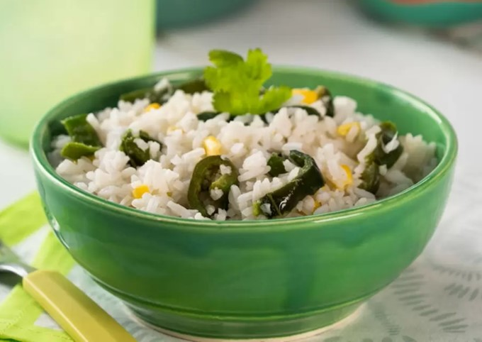

RECETA DE ARROZ BLANCO CON ELOTE Y CHILE POBLANO
Compartida por María Lourdes Peña
timer
person
Ingredientes
- 3 tazas de agua
- 2 dientes de ajo
- ¼ cebolla
- Suficiente de aceite
- 1 ½ tazas de arroz, remojado en agua caliente
- ½ taza de grano de elote
- ½ taza de rajas de chile poblano
- Suficiente de cilantro fresco
- 2 cucharadas de jugo de limón
- Sal al gusto
Procedimiento
- Licúa el agua con el ajo y la cebolla. Reserva.
- Calienta a fuego medio el aceite, agrega el arroz y fríe por 5 minutos, o hasta que esté ligeramente dorado.
- Agrega los granos de elote, las rajas de chile poblano, el agua, el cilantro y sazona con sal.
- Tapa y cocina por 10 minutos, después agrega el jugo de limón y cocina por 10 minutos más.
- Deja reposar de 5 a 10 minutos para que se termine de cocer con el mismo calor. Sirve y decora con cilantro.
